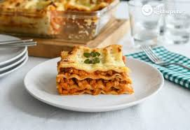

Inicio
Lasaña

Descripción
La lasaña es un plato tradicional que destaca por sus capas bien definidas de pasta, salsa y relleno. Cada bocado combina sabores intensos y una textura suave que la convierte en una comida reconfortante y muy apreciada.
Este plato suele servirse caliente, con el queso fundido y ligeramente dorado en la superficie. Es común en reuniones familiares porque es abundante, fácil de compartir y se puede preparar con antelación.
Ingredientes
- Láminas de pasta para lasaña
- Carne molida (res o mixta)
- Salsa de tomate
- Cebolla
- Ajo
- Queso mozzarella
- Queso parmesano
- Salsa bechamel
- Aceite de oliva
- Sal y pimienta
Pasos
- Cocina las láminas de lasaña según las instrucciones del paquete y resérvalas.
- Sofríe la cebolla y el ajo, agrega la carne molida y cocina hasta que esté bien hecha; incorpora la salsa de tomate y condimenta.
- En una fuente, arma la lasaña alternando capas de pasta, salsa de carne, salsa bechamel y queso.
- Hornea hasta que el queso esté fundido y dorado, luego deja reposar unos minutos antes de servir.